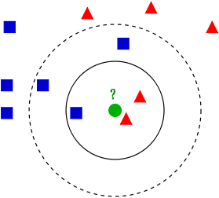
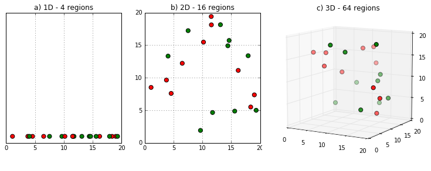
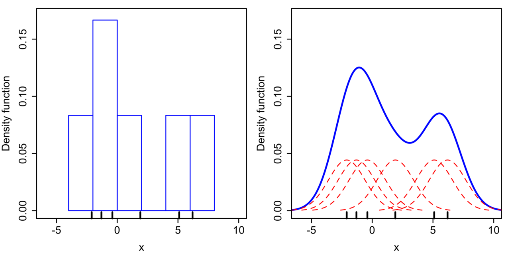
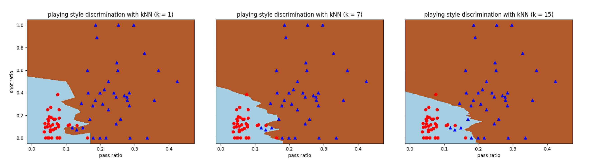
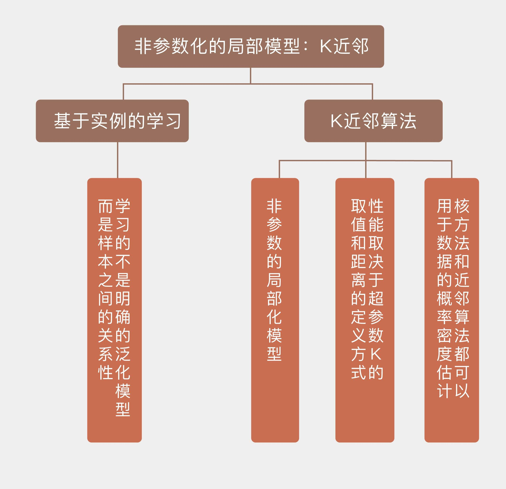

- 00 开篇词 打通修炼机器学习的任督二脉.md.html
- 01 频率视角下的机器学习.md.html
- 02 贝叶斯视角下的机器学习.md.html
- 03 学什么与怎么学.md.html
- 04 计算学习理论.md.html
- 05 模型的分类方式.md.html
- 06 模型的设计准则.md.html
- 07 模型的验证方法.md.html
- 08 模型的评估指标.md.html
- 09 实验设计.md.html
- 10 特征预处理.md.html
- 11 基础线性回归：一元与多元.md.html
- 12 正则化处理：收缩方法与边际化.md.html
- 13 线性降维：主成分的使用.md.html
- 14 非线性降维：流形学习.md.html
- 15 从回归到分类：联系函数与降维.md.html
- 16 建模非正态分布：广义线性模型.md.html
- 17 几何角度看分类：支持向量机.md.html
- 18 从全局到局部：核技巧.md.html
- 19 非参数化的局部模型：K近邻.md.html
- 20 基于距离的学习：聚类与度量学习.md.html
- 21 基函数扩展：属性的非线性化.md.html
- 22 自适应的基函数：神经网络.md.html
- 23 层次化的神经网络：深度学习.md.html
- 24 深度编解码：表示学习.md.html
- 25 基于特征的区域划分：树模型.md.html
- 26 集成化处理：Boosting与Bagging.md.html
- 27 万能模型：梯度提升与随机森林.md.html
- 28 最简单的概率图：朴素贝叶斯.md.html
- 29 有向图模型：贝叶斯网络.md.html
- 30 无向图模型：马尔可夫随机场.md.html
- 31 建模连续分布：高斯网络.md.html
- 32 从有限到无限：高斯过程.md.html
- 33 序列化建模：隐马尔可夫模型.md.html
- 34 连续序列化模型：线性动态系统.md.html
- 35 精确推断：变量消除及其拓展.md.html
- 36 确定近似推断：变分贝叶斯.md.html
- 37 随机近似推断：MCMC.md.html
- 38 完备数据下的参数学习：有向图与无向图.md.html
- 39 隐变量下的参数学习：EM方法与混合模型.md.html
- 40 结构学习：基于约束与基于评分.md.html
- 如何成为机器学习工程师？.md.html
- 总结课 机器学习的模型体系.md.html
- 总结课 贝叶斯学习的模型体系.md.html
- 结课 终有一天，你将为今天的付出骄傲.md.html
- 捐赠
19 非参数化的局部模型：K近邻
到目前为止，专栏中介绍的机器学习模型都属于参数模型，它们利用训练数据求解出关于问题的一般性知识，再将这些知识通过全局性模型的结构和参数加以外化。
一旦模型的结构和参数被确定，它们就不再依赖训练数据，可以直接用于未知数据的预测。而径向基核的出现一定程度上打破了这种规律，它将普适的全局特性打散成若干局部特性的组合，每个局部特性只能在它所覆盖的近邻区域内得以保持，由此产生的非结构化模型会具有更加灵活的表示能力。
在我看来，局部化的核心作用是模型复杂度和拟合精确性的折中。如果将整个输入空间看作一个大的整体区间，对它进行全局式的建模，那么单个模型就足以描述输入输出之间的规律，但这不可避免地会对表达能力造成较大的限制。
一个极端的情形是让所有输入的输出都等于同一个常数，这样的模型显然毫无信息量可言。可是在另一个极端，如果将局部特性继续加以细化，细化到让每个数据点都定义出不同局部特性的子区间，其结果就是基于实例的学习。
基于实例的学习（instance-based learning）也叫基于记忆的学习（memory-based learning），它学习的不是明确的泛化模型，而是样本之间的关系。
当新的样本到来时，这种学习方式不会用拟合好的算式去计算输出结果或是输出结果的概率，而是根据这个新样本和训练样本之间的关系来确定它的输出。在本地化的语境里，这就叫“近朱者赤，近墨者黑”。
在基于实例的学习方法中，最典型的代表就是\(k\)近邻。\(k\)近邻算法（\(k\)-nearest neighbors algorithm）可能是最简单的机器学习算法，它将每个训练实例都表示成高维特征空间中的一个点。
在解决分类问题时，\(k\)近邻算法先找到高维空间中与未知实例最接近的\(k\)个训练实例，再根据少数服从多数的原则，将这\(k\)个实例中出现最多的类别标签分配给未知的实例。从贝叶斯定理的角度看，按照少数服从多数分配标签与后验概率最大化是等效的。
下图是\(k\)近邻算法的一个简单的例子。训练数据属于两个不同的类别，分别用蓝色方框和红色三角表示，绿色圆圈则代表待分类的数据点，其类别由\(k\)近邻算法决定。可以看到，当\(k\)等于3时，离未知数据最近的三个点是两红一蓝，因此数据会被归类为红色三角。可是当\(k\)从3增加到5时，多出来的两个实例都是蓝色的，这无疑会导致分类结果发生逆转。

k近邻算法示意图（图片来自维基百科）
这个例子说明了\(k\)近邻算法的一个特点，就是超参数\(k\)对性能的影响。作为一种局部加权模型，\(k\)近邻并不形成关于数据生成机制的全局性假设，而是刻画了数据在不同局部结构上的规律，局部结构的范围就是由\(k\)来定义的。
在本质上，超参数\(k\)和径向基核（以及其他的核函数）是一样的，只不过径向基核在定义局部结构时使用了连续分布的权值，所有数据对局部特征都有或大或小的贡献；而\(k\)近邻使用了离散分布的权值，只有部分足够接近的数据才有资格定义局部特征，它可以视为是可变带宽的径向基核。
从另一个角度看，超参数\(k\)表示了模型的复杂度，准确地说是和模型的复杂度成反比关系。如果训练集的容量为\(N\)，算法的有效参数数目就可以近似表示为\(N / k\)。
\(k\)均值的分类结果实质上是近邻区域内（就是上图中的圆圈）多个训练实例的平均，越大的\(k\)值意味着近邻区域包含的点数越多，平均化的程度就越高，对训练实例中噪声的平滑效果也就越好，相应的模型复杂度就越低。\(k\)的一个极端取值是直接等于训练集的容量，这相当于所有数据共同定义了同一个局部结构，这时的\(k\)近邻就退化成稳定的全局模型了。
反过来，越小的\(k\)值意味着近邻区域越狭窄，平均化的程度也就越低。这时的分类结果只由离未知数据点最近的少量训练实例决定，因而更容易受到这些实例中噪声的影响，也会表现出更强的过拟合倾向。当\(k\)等于1时，未知数据的类别只取决于离它最近的训练实例。
这时画出每个训练实例的近邻边界，所有的近邻边界共同构成了对特征空间的Voronoi划分（Voronoi tessellation）。当训练实例较多时，这种1近邻算法计算出的分类边界会非常复杂，其泛化性能较差。
除了超参数\(k\)之外，\(k\)近邻算法的另一个变量是对距离的定义方式，也就是如何衡量哪些点才是“近邻”的标准。最常用的距离度量无疑是欧氏距离，可除此之外，闵可夫斯基距离（Minkowski distance）、曼哈顿距离（Manhattan distance）和马氏距离（Mahalanobis distance）也可以应用在\(k\)近邻算法中，不同的距离代表的是对相似性的不同理解，在不同意义的相似性下，分类结果往往也会有所区别。这些距离是如何来定义的，你可以自己查阅。
对距离的依赖性给\(k\)近邻算法带来了一个新问题，那就是维数灾难。在之前介绍维数灾难时我曾经留了一个扣，现在就该解开它了。简而言之，维数灾难对\(k\)近邻算法的影响在于在高维空间中，曾经的近邻没有那么“近”了。不管特征空间的维度是多少，近邻区域的维度和特征空间的维度都是一致的。在这个前提下，要在特征维度增加时维持对特征空间的覆盖率不变，近邻区域在每个维度上的尺度就会越来越大。
维数灾难的几何意义其实可以直观地想象出来。如果特征空间是一条长度为1的一维直线，那任意一个长度为0.1的线段都能覆盖特征空间上10%的区域。可一旦特征空间变成二维，要在边长为1的正方形里圈出一个面积为0.1的小正方形，小正方形的边长就增加到\(\\sqrt{0.1} = 0.316\)。这样一来，当数据点的数目不变时，维度的升高会导致原始的低维近邻点变得越来越稀疏，由近邻点所定义的局部结构也会越来越大。这样的局部结构失去了局部的意义，想让算法保证精确的分类性能就越困难了。

维度的升高会导致原始的低维近邻点变得越来越稀疏
（图片来自http://cleverowl.uk/2016/02/06/curse-of-dimensionality-explained/）
解决维数灾难最直接有效的方式就是增加数据点的数量，当数据点的数量没法增加时就得退而求其次，想办法降低特征空间的维度。还记得降维的主要方法吗？特征选择和特征提取都可以用于\(k\)近邻算法对数据的预处理。
作为典型的非参数方法，\(k\)近邻算法的运行方式和以线性回归为代表的参数方法截然相反。线性回归的运算量主要花在参数拟合上，利用大量的训练数据来拟合出使均方误差最小的一组参数。
一旦这组参数被计算出来，训练数据的历史使命就完成了，新来的数据都会用这组参数来处理。可\(k\)近邻算法的训练过程没那么复杂，只需要将数据存储下来就行了。可是对新实例进行分类时，\(k\)近邻算法需要找到离它最近的\(k\)个训练实例，这才是算法主要的运算负荷。
虽然是频率主义的方法，但以核函数和\(k\)近邻为代表的非参数方法也可以用来完成贝叶斯统计中概率密度估计（density estimation）的任务。如果用参数方法来进行密度估计，就需要先确定待估计概率密度的形式，再根据训练数据计算表示数字特征的参数。
比如假定概率密度具有正态分布的形式，那就需要估计它的均值和方差；具有指数分布的形式就要估计指数分布的参数。显然，参数化密度估计对概率密度形式的假设具有很强的依赖性，如果对概率分布的形式判断错误，那系数计算得再精确也是南辕北辙。
相比之下，非参数的密度估计就不会对待估计的分布做出什么先验假设，只是假定所有数据满足独立同分布的条件，因而具有更高的灵活性。但要讨论非参数密度估计方法，还是得从一种参数方法——直方图法（histogram）说起。
在统计学生成绩时，通常会计算<60、60~70、70~80、80~90和>90这些分数段内各有多少人，来大致绘出成绩的分布情况，这就是典型的直方图。直方图法将样本的取值范围划分成若干个等间隔子区间，再统计出现在每个子区间上的样本数目。在直方图上，第\(i\)个子区间上的概率可以表示成
\[ p_i = \\dfrac{n_i}{N\\Delta} \]
其中\(n_i\)是落在这个子区间内的样本数，\(N\)是样本容量，\(\\Delta\)是每个子区间的宽度，它决定了直方图的分辨率。\(\\Delta\)的取值过小会让直方图过于细密，让过多的局部细节掩盖了分布的整体结构；取值过大又会让直方图过于平滑，体现不出潜在的多模式趋势。要对概率密度做出精确的估计，必须要选择合适的区间宽度。
直方图方法的一个问题在于计算出的概率密度不是连续函数。要解决这个问题，可以将原始的子区间替换成平滑的连续函数，这就让整体概率密度等于所有局部概率密度的叠加，避免了不连续点的出现。
那么用来插值的连续函数应该满足什么样的条件呢？平滑特性决定了它不能只管自己，也要刻画数据的局部特性。那么刻画局部特性的工具是什么呢？核函数嘛！把核函数用于密度估计，就是非参数的核密度估计方法（kernel density estimation）。

直方图（左）与核密度估计（右）（图片来自维基百科）
可有了核函数还不够，还需要确定它的带宽。在密度估计中，核函数带宽决定了局部结构的范围，其作用和直方图的子区间宽度类似。核函数的带宽过大会导致过度平滑，带宽过小则会导致欠平滑，在实际应用中可以通过最优化类似均方误差的指标来确定。
核密度估计虽然能够给出连续的概率密度，但它所有的局部结构都由相同的带宽决定。可是在特征空间上，不同区域数据的密度不同，其局部结构也应该有所区别，这时就需要引入\(k\)近邻算法的思想。在基于近邻的密度估计中，近邻点的数目\(k\)是唯一的参数，每个数据点的带宽就是第\(k\)个最近点和它的距离。和核密度估计的带宽一样，\(k\)值同样定义了局部结构的性质，因此在选择时也要慎之又慎。
核密度估计和近邻密度估计可以从一个统一的宏观视角加以审视。在高维空间中，如果将数据\(\\bf x\)的局部结构定义为\(R\)，那么其概率密度就可以表示为
\[ p({\\bf x}) = \\dfrac{K}{NV} \]
其中\(K\)表示\(R\)中的数据点数目，\(V\)表示\(R\)的体积，它们都是不确定的量。如果设置\(V\)固定、\(K\)可变来估计概率密度，得到的就是核密度估计；如果设置\(K\)固定、\(V\)可变来估计概率密度，得到的就是近邻密度估计。
当样本容量\(N \\rightarrow +\\infty\)时，\(V\)会随着\(N\)的增加而缩小，以保证\(R\)上的概率密度为常数；\(K\)则会随着\(N\)的增加而增加，以保证\(R\)上的概率密度存在明显的峰值。这时，两种非参数的估计结果都会收敛到真实的概率密度。
和支持向量机一样，\(k\)近邻算法也可以用来解决分类问题。利用Scikit-learn中的KNeighborsClassifier类，可以计算出曼城-西布朗数据集中的分类边界，其中\(k\)的取值分别被设置为1，7和15。可以看到，\(k = 1\)时所有训练数据都能正确分类，而\(k = 15\)时误分类率超过了10%。
这说明当超参数\(k\)的取值逐渐变大时，训练数据的误分类率在不断提升，但计算出的分类边界也变得越来越平滑。这是偏差-方差折中的典型体现。

今天我和你分享了基于实例的学习方法，以及它的典型代表\(k\)近邻算法，其要点如下：
基于实例的学习方法学的不是明确的泛化模型，而是样本之间的关系；
\(k\)近邻算法是非参数的局部化模型，具有无需训练的优点，但分类新实例的计算复杂度较高；
\(k\)近邻算法的性能取决于超参数\(k\)的取值和距离的定义方式；
核方法和近邻算法都可以用于数据的概率密度估计。
\(k\)近邻方法是一种消极学习（lazy learning）方法，它并不会从训练数据中直接获取泛化决策，而是将它延迟到新样本出现的时候。相比之下，前面介绍的其他方法都属于积极学习（active learning）方法，在新样本出现前就做好了泛化工作。
那么，你觉得消极方法和积极方法有什么原理和性能上的优缺点呢？
欢迎分享你的观点。

© 2019 - 2023 Liangliang Lee. Powered by gin and hexo-theme-book.